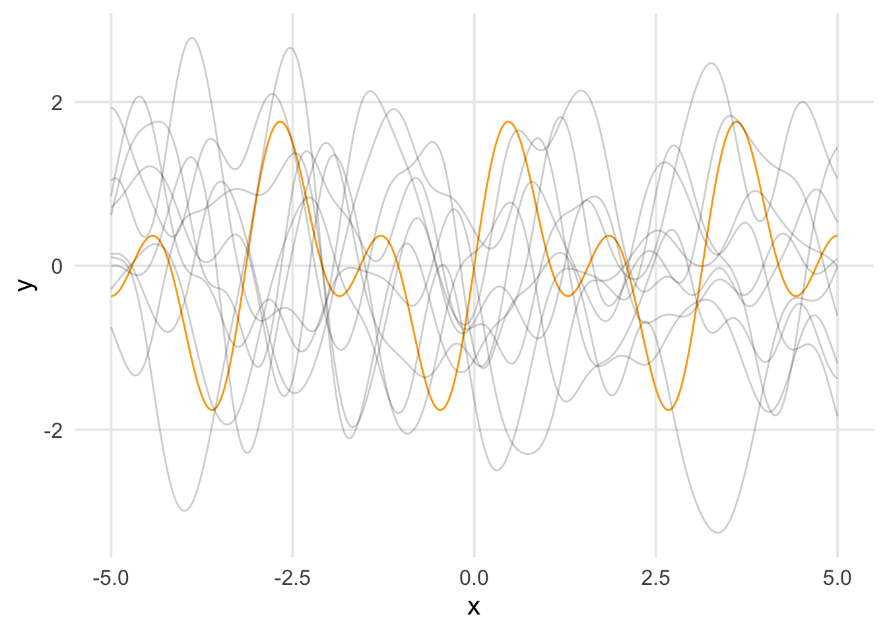

Gaussian Processes (often abbreviated as “GP”s) are stochastic (random) processes that are commonly used to model nonlinear functions. The authors of a popular textbook covering GPs and GP regression (Williams and Rasmussen 2006, pg. 2) provide the following informal definition:
A Gaussian process is a generalization of the Gaussian probability distribution. Whereas a probability distribution describes random variables which are scalars or vectors (for multivariate distributions), a stochastic process governs the properties of functions. Leaving mathematical sophistication aside, one can loosely think of a function as a very long vector, each entry in the vector specifying the function value \(f(x)\) at a particular input \(x\). It turns out, that although this idea is a little naïve, it is surprisingly close what we need.
This description helpfully orients us to two key aspects. First is that GPs are often used to specify probability distributions over functions. Second, it cues us to think about collections of function evaluations as (jointly distributed) vectors. Below we’ll discuss a more formal definition.
Definition
A Gaussian Process is an uncountably infinite collection of random variables, with any finite sample from the process sharing a joint multivariate Gaussian distribution. If we assume a function \(f(\mathbf{x})\) comes from a Gaussian Process, we write \[
\begin{align*}
f(\mathbf{x}) &\sim \mathcal{GP}(m, k)\ \text{ where } \\
m(\mathbf{x}) &= \mathbb{E}(f(\mathbf{x})), \text{ and } \\
k(\mathbf{x}, \mathbf{x}') &= \mathbb{E}[(f(\mathbf{x}) - m(\mathbf{x}))(f(\mathbf{x}') - m(\mathbf{x}'))].
\end{align*}
\]
The functions \(m\) and \(k\) are referred to as mean and covariance functions, respectively. The mean function is often set to be the zero function \(\mathbf{0}\) for notational convenience. The covariance (kernel) function must produce a positive definite matrix when evaluated on a collection of inputs. For my project, I’ve focused on the squared-exponential function. For the following examples, we’ll define it using its scalar form \(k: \mathbb{R} \times \mathbb{R} \to \mathbb{R}\): \[
k(x_i, x_j) = \alpha^2 \cdot \exp \Bigl( -\frac{1}{2\rho^2}(x_i - x_j)^2 \Bigr), \text{ where } \alpha, \rho > 0.
\]
Note that the values of \(k\) will decrease exponentially as the inputs (\(x_i\) and \(x_j\)) get farther apart. This is a desirable property for modeling covariance, as we’d generally expect two nearby inputs to be similar to each other and two distant values to be less similar. The range of the functions drawn from the GP is controlled via \(\alpha\), while the frequency (“wiggliness”) of the functions is controlled by the length-scale \(\rho\). Together, we refer to \(\alpha\) and \(\rho\) are as hyperparameters. They can be estimated from sample data using statistical inference, or chosen by the analyst based on expertise or problem context.
As an aside, the squared-exponential kernel is a common choice as a covariance function, but any function that produces a positive (semi)definite matrix can be used. David Duvenaud’s website and thesis chapter includes descriptions of various kernel functions that can be used for modeling different types of data (Duvenaud 2014).
Gaussian Process Regression
In practice, Gaussian Processes are often brought to bear on regression problems, in which an analyst has collected a dataset \(S = (\mathbf{x}, \mathbf{y}) = \{ (x_i, y_i) : x_i,y_i \in \mathbb{R}, i \in 1, 2, \dots, N \}\) with the goal of learning the relationship \(f\) between \(\mathbf{x}\) and \(\mathbf{y}\):
Once \(f\) has been estimated, it can then be used to predict the values of future or test points, which we’ll refer to as \(\mathbf{x}_* \in \mathbb{R}^M\).
Gaussian Process Regression can be considered a Bayesian method for learning \(f\). We’ll consider the plots below to as an example with simulated data.
In orange, we have a function, unknown to our imagined analyst. In grey we have 10 draws from \(f \sim \mathcal{GP}(\mathbf{0}, k(\mathbf{x}_*, \mathbf{x}_*))\). This represents what the analyst knows before incorporating information from \(S\). As we can see, the draws span the domain we’re interested in, but their y-values are chaotic and don’t align with the target.
Code
library(tidyverse)set.seed(123)theme_set(theme_minimal(base_size =15) +theme(panel.grid.minor =element_blank()))f <-function(x) sin(2*x) +sin(4*x)k <-function(x_i, x_j, alpha, rho) alpha^2*exp(-(x_i - x_j)^2/ (2* rho^2))k_xX <-function(x, X, alpha =1, rho =0.4) { N <-NROW(x) M <-NROW(X) K <-matrix(0, N, M)for (n in1:N) {for (m in1:M) { K[n, m] <-k(x[n], X[m], alpha, rho) } }return(K)}N <-400n <-30x <-seq(-5, 5, length.out = N)f_x <-f(x)D <-tibble(x, y = f_x)S <-slice_sample(D, n = n)Z <-anti_join(D, S, by ="x")K_xx <-k_xX(x, x)ggplot() +geom_line(data = D, aes(x, y), color ="orange") +geom_line(data =map(1:10, \(i) {tibble(x, y = MASS::mvrnorm(1, mu =rep.int(0, N), Sigma = K_xx)) }) |>bind_rows(.id ="b"),aes(x, y, group = b), alpha =0.2 )

Again we have our unknown target function in orange. The black dots comprise \(S\), the analyst’s dataset (here, N = 30).
Now we can combine our prior distribution with the observed data to produce a posterior distribution. In essence, the result is a new distribution that “agrees” with the observed training data points. Gaussian Processes have a nice property in that the posterior distribution can be computed analytically1:
After computing \(\hat{\mu}\) and \(\hat{\Sigma}\), we can draw samples from the multivariate normal distribution and summarize them to produce estimates for each test point in \(\mathbf{x}_*\). Below in blue is the posterior mean across our domain, with the grey shading representing \(\pm 2\) standard deviations (i.e., a 95% credible interval).
Code
eps <-0.009K_XX <-k_xX(S$x, S$x)K_xX <-k_xX(D$x, S$x)# Adding a small amount of noise to the diagonal for numerical stabilitymu <- K_xX %*%solve(K_XX + eps^2*diag(n)) %*% S$ysigma <- K_xx - K_xX %*%solve(K_XX + eps^2*diag(n)) %*%t(K_xX)draws <- MASS::mvrnorm(100, mu, sigma)draws <-as_tibble(t(draws)) |>mutate(x = D$x) |>pivot_longer(-x) |>group_by(x) |>summarise(y =mean(value), s =sd(value))ggplot() +geom_line(data = D, aes(x, y), color ="orange") +geom_ribbon(data = draws, aes(x, ymin = y -2*s, ymax = y +2*s), alpha =0.2) +geom_line(data = draws, aes(x, y), color ="blue") +geom_point(data = S, aes(x, y))
Williams, Christopher KI, and Carl Edward Rasmussen. 2006. Gaussian Processes for Machine Learning. Vol. 2. 3. MIT press Cambridge, MA.
Footnotes
The posterior distribution for this example assumes no additive noise in the target vector \(\mathbf{y}\). If measurement error is believed to be present, the computations for \(\hat{\mu}\) and \(\hat{\Sigma}\) should replace \(k(\mathbf{x}, \mathbf{x})\) with \(k(\mathbf{x}, \mathbf{x}) + \sigma_y^2 I_N\), in which \(\sigma_y\) is an additional hyperparameter for the outcome’s standard deviation. \(I_N\) is the \(N \times N\) identity matrix.↩︎